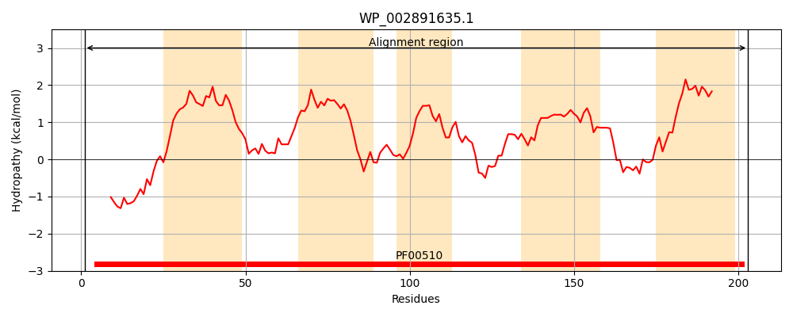
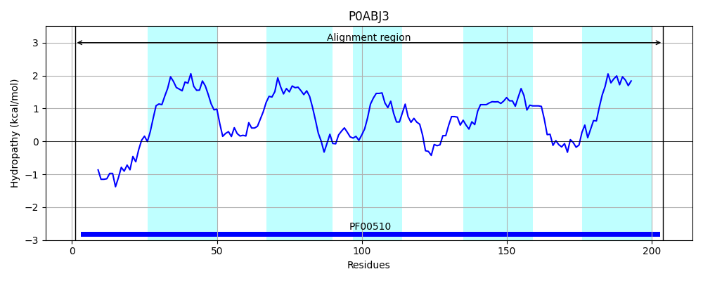
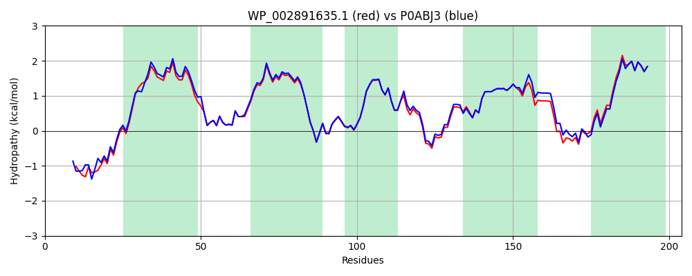

Hit Accession: P0ABJ3
Hit TCID: 3.D.4.5.1
Hit Description: gnl|BL_ORD_ID|8708 gnl|TC-DB|P0ABJ3|3.D.4.5.1 Cytochrome o ubiquinol oxidase subunit 3 OS=Escherichia coli (strain K12) GN=cyoC PE=1 SV=1
Mach Len: 204
e:0.000000
Query TMS Count : 5
Hit TMS Count: 5
TMS-Overlap Score: 5.600000
Predicted Substrates:CHEBI:5584;hydron
BLAST Alignment:
Score: 995 , Bit scores: 387 bits, E-value: 1.2e-139, Alignment length: 204, Percentage identity: 91
Query: 1 MATDTLAH-TAHAHEHGHHDTGPMKVFGFWIYLMSDCIIFATLFATYAVLVNGTAGGPTGKDIFELPFVLVETALLLFSSITYGMAAIAMYKNNKSQVVSWLALTWLFGAGFIGMEIYEFHHLIMEGFGPDRSGFLSAFFALVGTHGLHVTSGLIWMAVLMFQVSRRGLTSTNRTRILCLSLFWHFLDVVWICVFSVVYLMGAM 203
MATDTL H TAHAHEHGHHD G K+FGFWIYLMSDCI+F+ LFATYAVLVNGTAGGPTGKDIFELPFVLVET LLLFSSITYGMAAIAMYKNNKSQV+SWLALTWLFGAGFIGMEIYEFHHLI+ G GPDRSGFLSAFFALVGTHGLHVTSGLIWMAVLM Q++RRGLTSTNRTRI+CLSLFWHFLDVVWICVF+VVYLMGAM
Sbjct: 1 MATDTLTHATAHAHEHGHHDAGGTKIFGFWIYLMSDCILFSILFATYAVLVNGTAGGPTGKDIFELPFVLVETFLLLFSSITYGMAAIAMYKNNKSQVISWLALTWLFGAGFIGMEIYEFHHLIVNGMGPDRSGFLSAFFALVGTHGLHVTSGLIWMAVLMVQIARRGLTSTNRTRIMCLSLFWHFLDVVWICVFTVVYLMGAM 204 | Protein Hydropathy Plots: |
|---|
|  |  |
Pairwise Alignment-Hydropathy Plot:
|
|---|
|  |